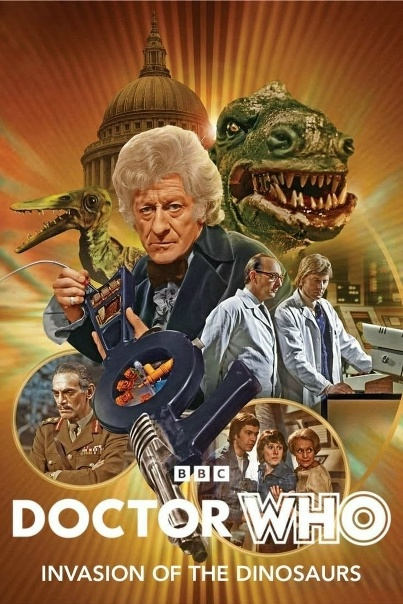

Эра Третьего Доктора (11 сезон)
<<< НАЗАД ||| 2. Вторжение динозавров ||| ДАЛЬШЕ >>>
Субтитры: Русские и Английские |  |
|---|
Дата выхода: 12 января - 16 февраля 1974
Формат: 6 эпизодов по 25 мин.
| Все эпизоды кроме 1-го сохранились в цвете (видеокассета PAL 2") * 1-й эпизод найден в 1983 г. (цвет восстановлен по хроматографическим точкам) |
|---|
 |  помощник |  помощник | помощник |
Доктор и Сара Джейн возвращаются в Лондон — а город пуст. Эвакуирован из-за динозавров, которые появляются и исчезают без следа. ЮНИТ берётся за расследование, и постепенно выясняется, что за хаосом стоит заговор высокопоставленных людей, желающих откатить Землю к доиндустриальному «золотому веку». Избранных граждан сажают на фальшивый «космический корабль» в подземном бункере, убеждая их, что они летят к новой планете. Экологическая тема, фиктивный апокалипсис и, по признанию многих, одни из самых печально знаменитых спецэффектов в истории сериала.
VHS - октябрь 2003 | DVD+Boxset - 9 января 2012 * Версия в нашей группе |
|---|



Трейлер: